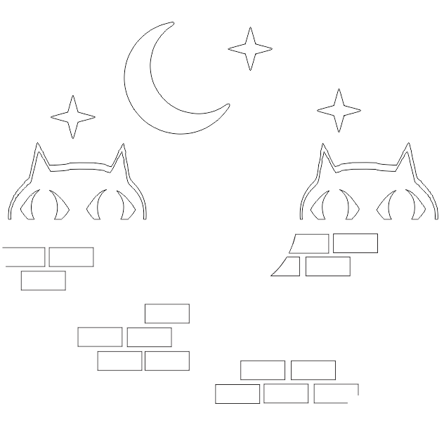
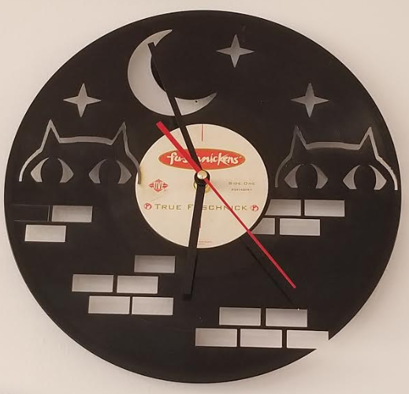
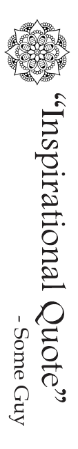

The first project of this unit was to design and cut out a clock onto a record. My greatest challenge was making sure that I didn't accidently cut out parts that I wanted to keep. There were also a few close calls were I almost forgot to set lines to 'hairline'' in CorelDraw before I cut, but luckily I caught it before I took it to the machine.
 For the second part of this project I designed a bookmark to engrave on leather. I have not actually engraved it yet, so we'll see how that goes.
For the thir part of this unit, I used the rotary tool to engrave on a glass. I had no problem creating the files, but when I went to print, I had messed up the dimensions and caused the design to print wrong. Because of this, I had to get rid of the cup and prnt on a second one. After the first mistake I was more careful, and the second one was engraved without a hitch.
 Back to Index
Back to Index